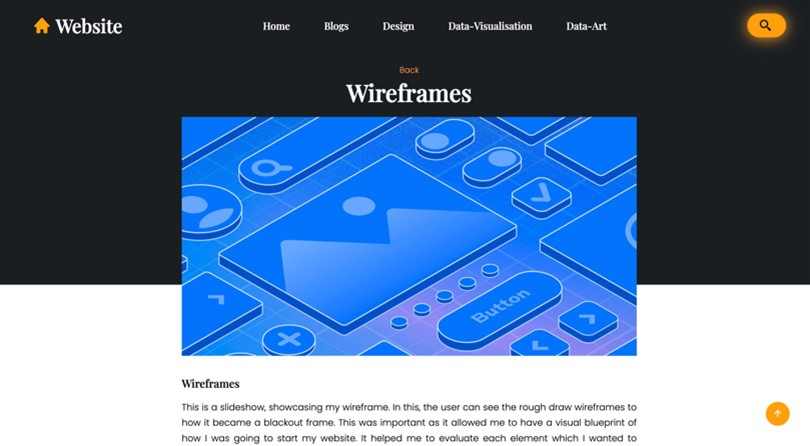
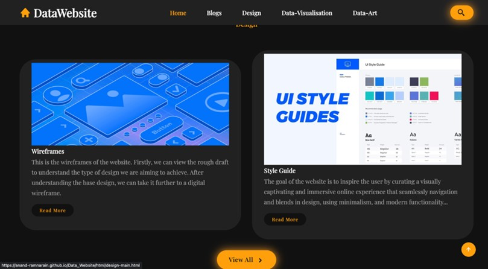
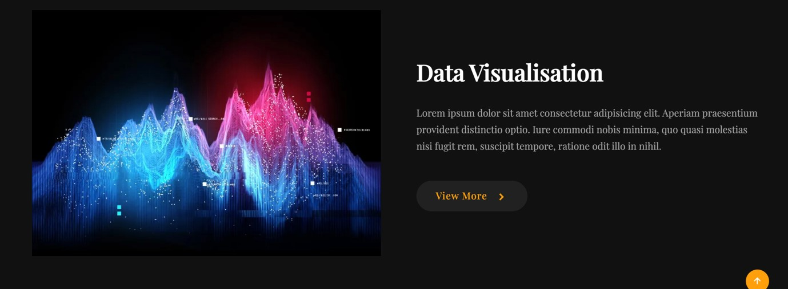
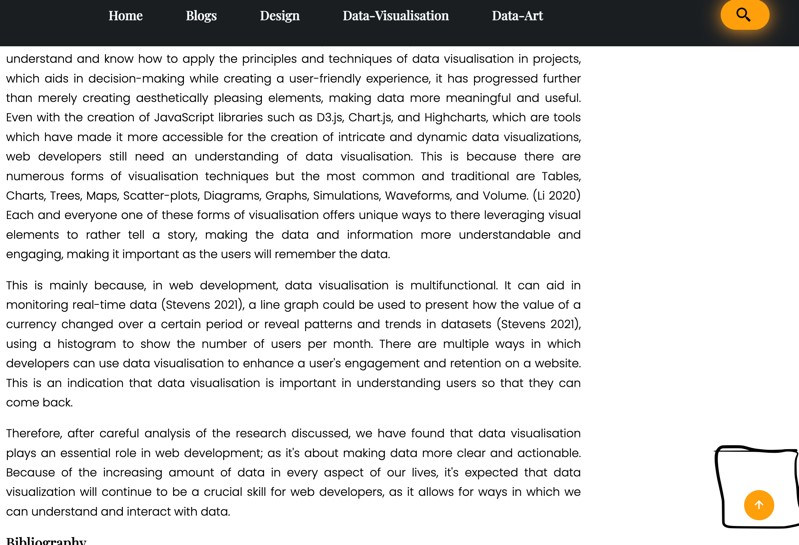
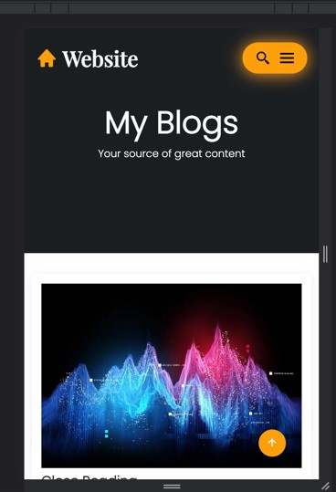
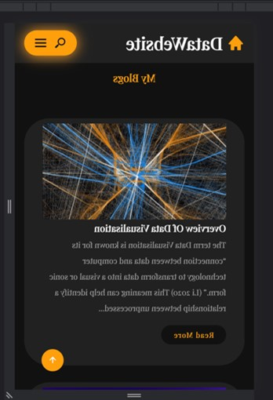

subheader
In the digital age, a website is now the first point of contact with its audience. However, just having a website is not enough; the way a user interacts with the website and experiences it can be the difference between a fleeting visit and a lasting impression. User Interface focuses on the look and layout, referring to the visual aspect. While the user experience dives deeper into the emotional and functional experience of users. It examines how users feel as they navigate the site. This blog post will attempt to analyse the UI and UX of my website, using the works of Knaflic's Principles, identifying its strengths and areas of improvement.
The most prominent visual design that stands out, is the colour scheme, cantering around black, white and orange. The black and white colour scheme offers one of the highest contrasts, The use of these two colours, in the website is primarily on the background and text, which ensures text is legible and readable to the user. The orange colour in the website is a highlighting colour against a monochromatic background, thus it is a “leverage colour selectively”( Knaflic 2015, 117). Explaining how using a certain colour sparingly is an important strategic tool as it guides user attention to key aspects of the website, eliminating distractions and causing the user to first focus on the colour. The use of this especially on the buttons, provides a “Call to Action”(Goldberg pp, 11). Encouraging users towards the content, to click it. Making it more likely that the user will stay on the website or want to read/view more about the content.
hese Images below indicate the colour scheme of the website. The image of the right if we look at the bottom we can see how it uses the orange colour for a “Call To Action”.
 Further, we will investigate the typography. The typography of the website features Poppins for content and Playfair Display for headings. Poppins' modern and geometric design offers a clear reading experience, while Playfair Display uses a high-contrast and serifed design, which is great for heading but not good a small text. Using these two fonts together balances design, as it creates an aesthesis design while making content easy to read, creating a contemporary web experience. In Figure 1.1 it can be seen how Playfair is used as a heading while Poppins is for content.
Alongside this is the size of the elements. Sizing is a very important aspect of UI as it can “attract attention and signal importance.” (Knaflic 2015, p 129) The sizing effect has a similar meaning to the colour in a way it can show what is important and just how two elements can be equal in meaning or relevance. It shows how the size of certain elements can be used for an indication of something.
The above image indicates the topic of the section is “Data Visualisation” and that this is the heading and it has significant importance to indicate to the user the section they are reading about. The text is smaller as it is a summary of what is in the section. It is seen that the button is considerably large. Considering, this is on the homepage is an indication to the users, so they know which section they are on, and what is about. The larger button plays a role in CTA to get the user to want to read more about it. These visual element as designed to enhance the user's experience in making a clear understanding and viewing of what is important, so their experience is simple and easy as the content and value is indicated through its size and colour that is legible and readable.
These aspects of visual design are all used together for aesthetics but to further understand it we must investigate its layout and structure. The homepage uses a black screen as negative space and the content text is a white colour drawing users focus so they know what to look at. The homepage uses both edge alignment and centre alignment. Yes, they are for different sections as it displays different content but it ends up creating an uneasy feeling toward the user as there is no consistency in its alignment. To counter this mix of alignments, the other webpages are consistent in a centre alignment, while using a white background with black text keeping the content centred and making it the focus, allowing it to appear clear, confident, elegant, formal and trustworthy.
There is also Interactivity, referring to the animations, transitions, and how the users interact with the website, when combined with the visual UI, it creates the user experience. The first interaction aspect is the navigation bar. The nav bar is a consistent aspect of the website as it always remains on screen and its style never changes throughout each webpage allowing for consistency and ensuring its user-friendly nature. As it easily navigates to each section provided on the nav bar. The only concern with the nav bar is that it doesn’t highlight which webpage the user is on, but this counts as each webpage does state the section they are in, still allowing for the user to each where they are.
Furthermore, the transitions of the website are smooth so the user experience is more enjoyable and intuitive. Aiding users to understand where they are and where they are going on the site. There is also an animation effect as when the user scrolls down on the homepage the content slowly appears. The use of this effect is firstly removing clutter to draw focus on what they can see. Knaflic's Principles are explained as they aid in content seeming simpler to the user, so it doesn’t overwhelm the user. (Knaflic 2015, pp 73) The use of these effects allows for a “cognitive load reduction” (Knaflic 2015, p 71) as the changes aren’t so abrupt, making it reduce the cognitive load on users by providing so they have a clearer sense of continuity on the website and so they can process the information, so it doesn’t seem overcomplicated.
Even though the UI helps in creating an effective and simple user experience, there is still a concern for user control. In the blog and design section, there are no previous or next icons. But there is a constant top button on the website. Which can take the user back to the top of the webpage where they will be able to navigate back a screen.
The image indicates the top icon, which uses Law 3 of the laws of locality as the element is placed where it will not effect change to the website but is still available to the user to interact with. Allowing the user to always have a clear knowledge that there is always where to go on the page, thus creating consistency as the user experience feels more cohesive and predictable, as there is always an option for them.
he next aspect of the UI and UX is the responsive design. It's designed to be responsive for multiple screens. On desktops, the full navigation bar is displayed, with content spread out in a manner that maximizes the use of the larger screen. This ensures that users can quickly identify the main sections and navigate with ease. Since it was designed firstly for a desktop it was made for intuitive navigation as the user is immediately presented with all available options. The large use of negative space, alongside the content display of layout and columns made it easy to create a responsive design. For smaller devices, the navigation bar is replaced with a menu icon. Upon interaction, the full navigation options slide down. The content is also restructured to fit these devices, generally employing a column-based layout. There downside in the responsive design, lost on all webpages except the homepage as the menu icon is unable to load the navigate on all pages, but there is still a button to make sure the users can move around the website. This allows for it to meet the user expectations, as many users now expect websites to adjust according to their device because “Many users depend mostly or entirely on mobile access;”(Fukuda, Course Notes). The expectation isn't just about fit but also about functionality and ease of use. Making the user experience easier as they can access the website on these devices.
 Finally, the last aspect of the UI is the performance. The website’s performance is relatively fast as the design and text content load fast, but the issue comes with the images. The images on the website take time to load, making it seem as if there may not be any images. Even with the use of compressed panda to reduce the image's size, it is still ineffective, but I have included alt text in the image in HTML which should describe what the image is about.
Therefore, after a careful analysis of the website’s UI and how that guides the UX. We have identified the strengths and areas of improvement in the website, to which I can make a more effective and responsive website that will use the UI to guide users for an easier and simpler experience.
Bibliography
• Knaflic N, C. 2015. Storytelling with Data: A Data Visualization Guide for Business Professionals. New York: John Wiley & Sons.
•Goldberg, P. 2023. A Crash Course In User Experience [+] Interface Design. Course Notes. Johannesburg: Wits School of Arts, University of the Witwatersrand. https://ulwazi.wits.ac.za/courses/49201/files/4500445?module_item_id=470422.
• Geyser, H. 2023. User Interface – Guide. 24 July 2023. Lecture Notes. Johannesburg: Wits School of Arts, University of the Witwatersrand.
• Hassenzahl, M & Tractinsky, N. 2006. User experience - a research agenda. Behaviour & Information Technology. 25(2) pp 91-97.
•UXPin. 2020. Studio. The Basic Principles of User Interface Design. Online. https://www.uxpin.com/studio/blog/ui-design-principles/. 26/08/2023.